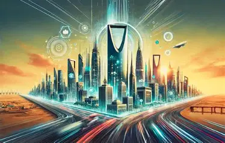

رؤية السعودية 2030 هي خارطة طريق طموحة ترسم ملامح المستقبل للمملكة العربية السعودية، وتهدف إلى تنويع الاقتصاد، وتطوير الخدمات، وتعزيز جودة الحياة، وبناء مجتمع حيوي واقتصاد مزدهر ووطن طموح.
تستند رؤية 2030 إلى ثلاث ركائز أساسية تقود التحول نحو المستقبل:
تشمل الرؤية مشاريع مستقبلية كبرى مثل نيوم، والقدية، والبحر الأحمر، وذا لاين، إلى جانب التحول الرقمي الشامل، وتنمية السياحة والترفيه، ودعم الطاقة المتجددة والاستدامة البيئية.
صورة وفيديو حول المستقبل ورؤية 2030:
